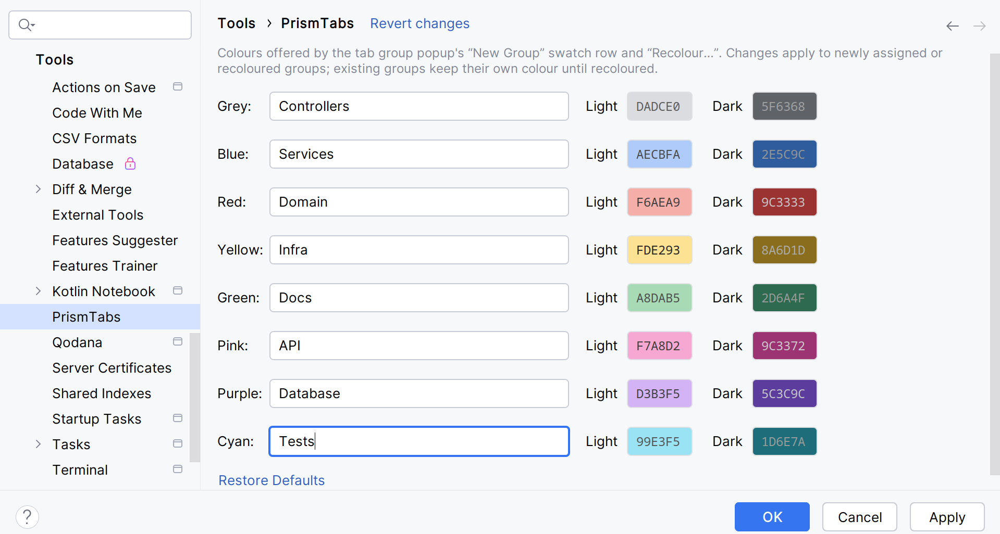
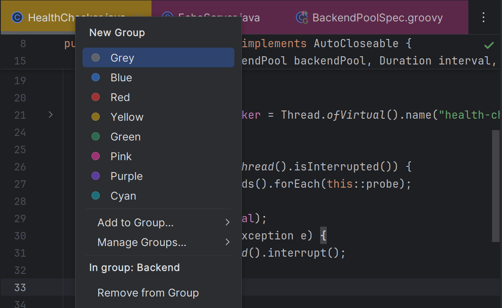
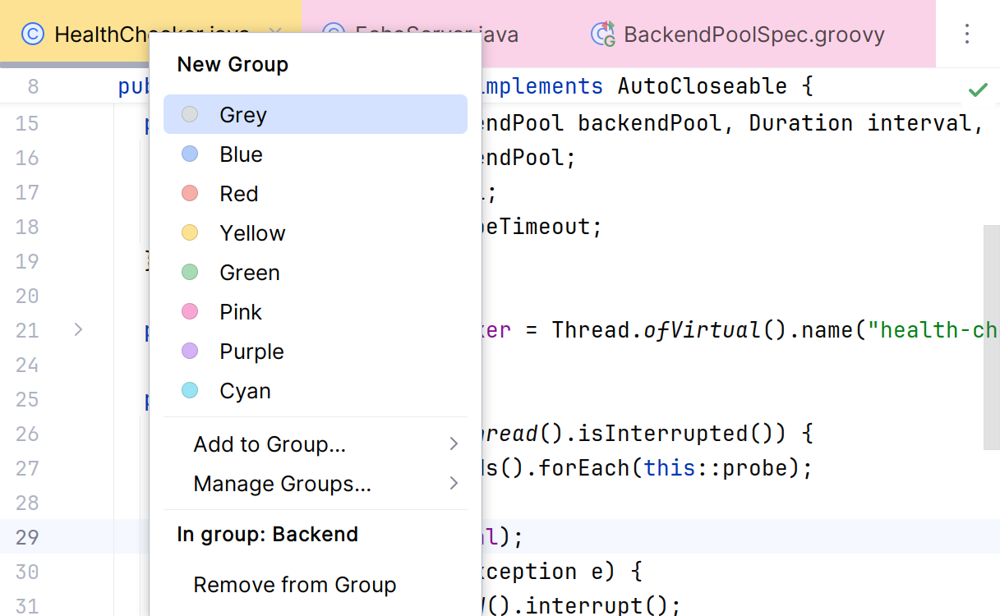

Colour groups,
built for your JetBrains IDE tabs
PrismTabs brings a familiar tab-colouring workflow to the JetBrains IDE family. Right-click any editor tab, pick a colour or a named group, and keep sprawling tab strips organised — with a dedicated tool window for managing every group at a glance.
Free, with every feature included.
Works in IntelliJ IDEA and every other JetBrains IDE, from version
2024.2 onward.


Group your editor tabs by colour, and manage every group from one place
PrismTabs colours editor tabs directly through the supported platform API and gives every group a proper home in a dedicated tool window.
One right-click away
Right-click any editor tab for a colour swatch popup: click one of 8 preset dots to start a new group and name it, or "Add to Group…" to join one you already have.
Named, reusable groups
Group tabs under a name, not just a colour. Rename, recolour, or delete a group any time from the popup.
Active-group auto-join
Mark a group active and every file you open that isn't already in a group joins it automatically — until you deactivate it.
A real tab groups panel
The PrismTabs tool window lists every group with its colour, member count, and hidden state — expand one to the files it holds, open or closed.
Hide, then show
Hiding a group closes its tabs and remembers them; showing it reopens every one, in order.
Survives restarts & renames
Assignments persist across restarts, along with the tabs a hidden group remembers, and follow a file through a rename or move.
Eight presets, tuned for both themes — and fully editable
Every colour ships with a light and a dark variant, measured for contrast on editor tabs rather than picked by eye. Use them as they ship, or rename any preset or repaint it under Settings → Tools → PrismTabs.


Three steps, no configuration required
PrismTabs works out of the box with sensible defaults — the palette settings are there for when you want them, not because you need them.
Right-click a tab
Open the colour swatch popup from any editor tab's context menu.
Pick a colour or group
Click a preset swatch under "New Group" and give the group a name, or use "Add to Group…" to join one that already exists.
Manage your groups
Rename, recolour, or delete a group from "Manage Groups…" in the same popup — or from the "PrismTabs" tool window on the right-hand stripe, which can also hide and show a group.


Built on the IntelliJ Platform, not one IDE
PrismTabs is built on the IntelliJ Platform rather than on any one product, so it runs in every IDE built on it.
Ready to keep your tabs under control?
Read the full manual for everything PrismTabs can do.